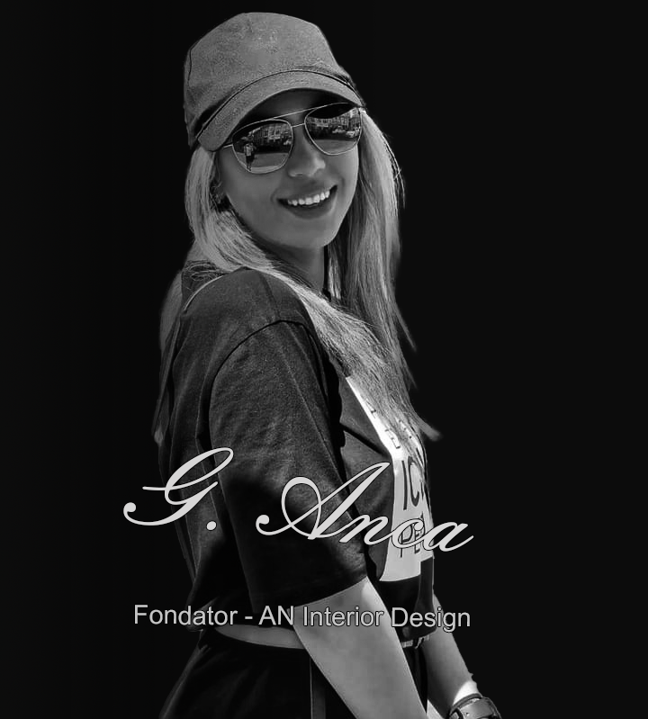

Despre noi
Studio AN Interior Design
Arhitectură de interior cu suflet, în Ploiești, Prahova și București.

Fondator
Arhitect G. Anca
Fondatoarea AN Interior Design coordonează personal fiecare proiect, de la prima discuție până la predarea la cheie. Experiența în proiecte rezidențiale și comerciale îi permite să găsească echilibrul dintre estetică, funcțiune și buget.
Biografie detaliată — de confirmat cu studioul.
Filosofia noastră
„Minimalism viu”
Minimalismul viu nu se referă la un aspect „înfășurat” sau vizual. Se referă la sentimentele interioare, la adevăratul tău sine — locul în care ești confortabil să locuiești.
Se bazează pe materiale naturale și texturi neprocesate — autentice, reale, apropiate de natură.
De ce noi
Patru motive să lucrăm împreună
Orientarea către client
Clienții ne aleg pentru simplitatea comunicării și pentru înțelegerea cerințelor lor.
Profesionalism
Ciclu complet de documentație: schiță, randare, moodboard, documentație de execuție.
Experiență multiplă
Lucrăm în stiluri diferite și proiectăm proprietăți rezidențiale și comerciale.
Supervizare de autor
Selectăm materiale de calitate și producători cu renume, urmărind execuția pe șantier.
* cifre orientative — de confirmat cu studioul
Ce spun clienții
„Echipa a transformat complet casa noastră, aducând un aer modern și elegant în fiecare încăpere. Profesionalismul și atenția la detalii ne-au depășit așteptările.”Ana
„Au dat dovadă de profesionalism, creativitate și o dedicare impresionantă pe tot parcursul proiectului. Rezultatul final este pur și simplu spectaculos!”Fabian